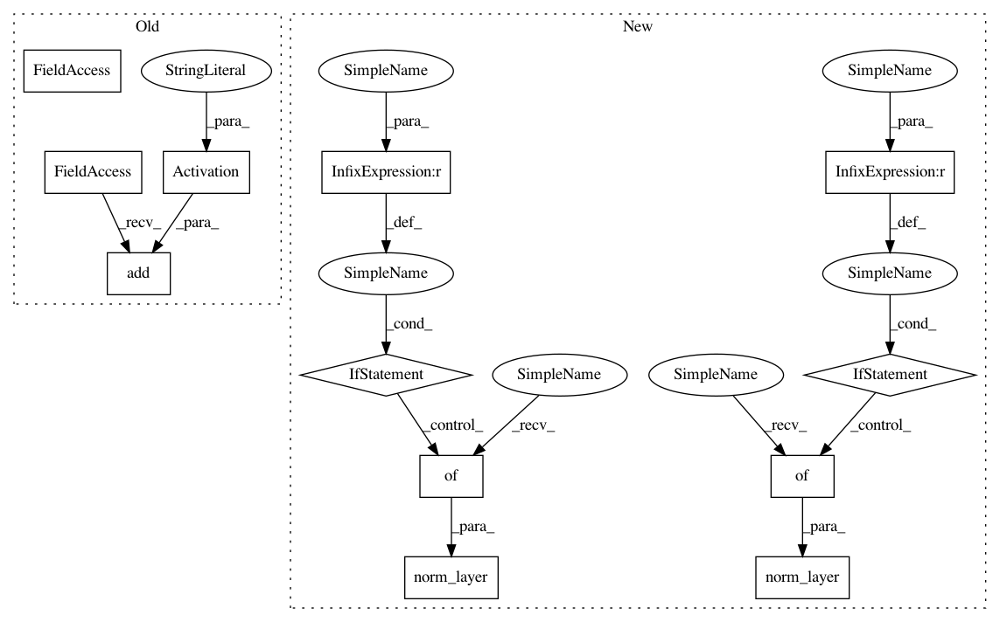

2318052dc79966bf36675606b7d992a347418292,gluoncv/model_zoo/resnext.py,Block,__init__,#Block#Any#Any#Any#Any#Any#Any#Any#,53
Before Change
if use_se:
self.se = nn.HybridSequential(prefix="")
self.se.add(nn.Conv2D(channels // 4, kernel_size=1, padding=0))
self.se.add(nn.Activation("relu"))
self.se.add(nn.Conv2D(channels * 4, kernel_size=1, padding=0))
self.se.add(nn.Activation("sigmoid"))
else:
self.se = None
After Change
for :class:`mxnet.gluon.contrib.nn.SyncBatchNorm`.
def __init__(self, channels, cardinality, bottleneck_width, stride,
downsample=False, last_gamma=False, use_se=False,
norm_layer=BatchNorm, norm_kwargs=None, **kwargs):
super(Block, self).__init__(**kwargs)
D = int(math.floor(channels * (bottleneck_width / 64)))
group_width = cardinality * D
self.body = nn.HybridSequential(prefix="")
self.body.add(nn.Conv2D(group_width, kernel_size=1, use_bias=False))
self.body.add(norm_layer(**({} if norm_kwargs is None else norm_kwargs)))
self.body.add(nn.Activation("relu"))
self.body.add(nn.Conv2D(group_width, kernel_size=3, strides=stride, padding=1,
In pattern: SUPERPATTERN
Frequency: 3
Non-data size: 12
Instances
Project Name: dmlc/gluon-cv
Commit Name: 2318052dc79966bf36675606b7d992a347418292
Time: 2019-01-07
Author: cheungchih@gmail.com
File Name: gluoncv/model_zoo/resnext.py
Class Name: Block
Method Name: __init__
Project Name: dmlc/gluon-cv
Commit Name: 2318052dc79966bf36675606b7d992a347418292
Time: 2019-01-07
Author: cheungchih@gmail.com
File Name: gluoncv/model_zoo/resnext.py
Class Name: Block
Method Name: __init__
Project Name: dmlc/gluon-cv
Commit Name: 2318052dc79966bf36675606b7d992a347418292
Time: 2019-01-07
Author: cheungchih@gmail.com
File Name: gluoncv/model_zoo/nasnet.py
Class Name: BranchSeparablesReduction
Method Name: __init__
Project Name: dmlc/gluon-cv
Commit Name: 2318052dc79966bf36675606b7d992a347418292
Time: 2019-01-07
Author: cheungchih@gmail.com
File Name: gluoncv/model_zoo/nasnet.py
Class Name: BranchSeparables
Method Name: __init__